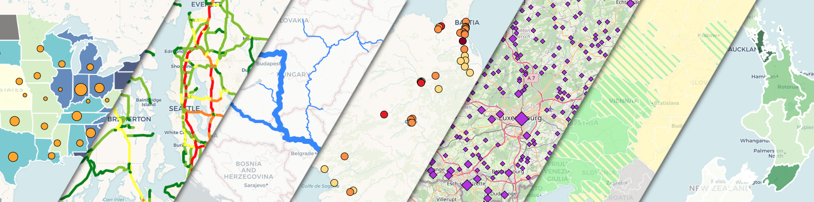

<!doctype html>

<html>
	<head>
		<meta charset="utf-8">
		<title>Leaflet-dataclassification plugin demo page: "polygons_color"</title>
		<link rel="stylesheet" href="https://fonts.googleapis.com/css?family=Open+Sans">

		<!-- leaflet from CDN -->
		<link rel="stylesheet" href="https://unpkg.com/leaflet@1.9.4/dist/leaflet.css" integrity="sha256-p4NxAoJBhIIN+hmNHrzRCf9tD/miZyoHS5obTRR9BMY=" crossorigin="" />
		<script src="https://unpkg.com/leaflet@1.9.4/dist/leaflet.js" integrity="sha256-20nQCchB9co0qIjJZRGuk2/Z9VM+kNiyxNV1lvTlZBo=" crossorigin=""></script>

		<!-- plugin: -->
		<script src="../leaflet-dataclassification.js"></script>
		<link rel="stylesheet" href="../leaflet-dataclassification.css" />				
		<!-- dependencies: -->
		<script src="../lib/simple-statistics.min.js"></script>
		<script src="../lib/chroma.min.js"></script>
		
		<style>
			html, body {
				height: 100%;
				margin: 0;
				font-family: 'Open Sans', 'OpenSans-Local';
				font-style: normal;				
			}
			
			#map {
				position: absolute;
				margin:  auto;
				top: 0;
				bottom: 0;
				left: 0;
				right: 0;
			}	
			
			/* Overriding Chrome's built-in CSS rules to avoid focus rectangle on clicking polygons on a Leaflet map */
			path.leaflet-interactive:focus {
				outline: none;
			}					
		</style>
	</head>
	<body>		
		<div id="map"></div>				
		<script>
		
			// base maps
			var OSM = L.tileLayer('https://{s}.tile.openstreetmap.org/{z}/{x}/{y}.png', {
				attribution: '&copy; <a href="https://www.openstreetmap.org/copyright" target="_blank">OpenStreetMap</a> contributors'
			});
			var carto_attrib = '&copy; <a href="http://www.openstreetmap.org/copyright">OpenStreetMap</a>, &copy; <a href="https://carto.com/attributions">CARTO</a>'
			var cartodb_dark = L.tileLayer('https://{s}.basemaps.cartocdn.com/dark_all/{z}/{x}/{y}' + (L.Browser.retina ? '@2x.png' : '.png'), {
				attribution: carto_attrib,
				subdomains: 'abcd',
				maxZoom: 20,
				minZoom: 0
			});
			var cartodb_voyager = L.tileLayer('https://{s}.basemaps.cartocdn.com/rastertiles/voyager/{z}/{x}/{y}' + (L.Browser.retina ? '@2x.png' : '.png'), {
				attribution: carto_attrib,
				subdomains: 'abcd',
				maxZoom: 20,
				minZoom: 0
			});
			var cartodb_positron = L.tileLayer('https://{s}.basemaps.cartocdn.com/light_all/{z}/{x}/{y}' + (L.Browser.retina ? '@2x.png' : '.png'), {
				attribution: carto_attrib,
				subdomains: 'abcd',
				maxZoom: 20,
				minZoom: 0
			});
			var baseMaps = {
				"OpenStreetMap": OSM,
				"CARTO Dark": cartodb_dark,
				"CARTO Voyager": cartodb_voyager,
				"CARTO Positron": cartodb_positron
			};
			// map div object, main Leaflet object:
			var map = L.map('map', {layers: [cartodb_voyager]}); 
			map.attributionControl.setPrefix('<a href="https://leafletjs.com" title="A JavaScript library for interactive maps">Leaflet ' + L.version + '</a>');
			var layerControl = L.control.layers(baseMaps, null, {collapsed: false}).addTo(map);

			// Polygon features example. Attribute to test with: 'population2022', 'areakm2', 'density2022'
			fetch('data/polygons_nz_regions.geojson').then(r => r.json()).then(d => {
				function tooltip(feature, layer) {
					if (feature.properties.name_1 && feature.properties.population2022) {
						layer.bindTooltip('<b>' + feature.properties.name_1 + '</b><br>'+ 
						'Population: '+feature.properties.population2022+'<br>'+
						'Area: '+feature.properties.areakm2+' km²<br>'+
						'<i>Normalized: '+String(Math.round(feature.properties.population2022/feature.properties.areakm2 * 100)/100)+
						' pop/km²</i>');
						layer.on('mousemove',e=>{
							e.target.getTooltip().setLatLng(e.latlng);
						});
					}
				}

				window.testdata = L.dataClassification(d, {
					style: {color: "white"},
					mode: 'jenks',
					classes: 5,
					field: 'population2022',
					normalizeByField: 'areakm2',
					colorRamp: 'Greens',
					classRounding: 2,
					legendTitle: 'Population density<br>(pop/km²)',
    				attribution: "Administrative boundaries: <a href='https://maps.princeton.edu/catalog/stanford-pv084qp8629' target='_blank'>Hijmans, Robert J.. University of California</a>, Census data: <a href='https://nzdotstat.stats.govt.nz' target='_blank'>nzdotstat.stats.govt.nz</a>",
					onEachFeature: tooltip
				}).addTo(map);
				map.fitBounds([[-48, 165], [-33, 179]]);
			});

			var infopanel = L.control({position: 'bottomright'});
			infopanel.onAdd = function (map) {
				var div = L.DomUtil.create('div', 'info');
				div.innerHTML += 
					'<div style="display: flex; flex-direction: column; max-width: 505px; text-align: center; row-gap: 8px"">' +
						'<div style="font-weight: bold;">' + 
							'Leaflet-dataclassification plugin demo page: "polygons_color"' + 
						'</div>'+ 
						'<div style="text-align: justify">' +
							'This is an example page showcasing some of the features of Leaflet plugin <i>leaflet-dataclassification</i>. '+
							'The attribute values are normalized on-the-go by an other field, based on which the classification is done. '+
							'Feature tooltips on hover (native feature of Leaflet) were added to provide an easy check of both source and normalized values. '+
							'<br><br>'+
						'</div>'+ 
						'<div>'+ 
							'Single-step data classification, symbology and legend creation for GeoJSON data powered thematic maps.'+
							'<br><br>'+
							'Demos: <a href="./combined.html">combined</a>, <a href="./points_c.html">points_c</a>, <a href="./points_s.html">points_s</a>, <a href="./lines_c.html">lines_c</a>, <a href="./lines_w.html">lines_w</a>, <a href="./polygons_c2.html">polygons_c2</a>, <a href="./polygons_h.html">polygons_h</a>'+
							'<br><br>'+
							'Project page: <b><a href="https://github.com/balladaniel/leaflet-dataclassification">https://github.com/balladaniel/leaflet-dataclassification</a></b>'+
						'</div>'+ 
							'<a href="https://github.com/balladaniel/leaflet-dataclassification"></img></a>'+
					'</div>';
				return div;
			}
			infopanel.addTo(map);

		</script>	
	</body>
</html>